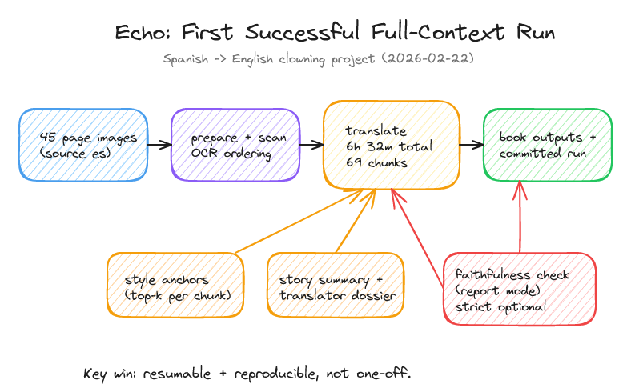
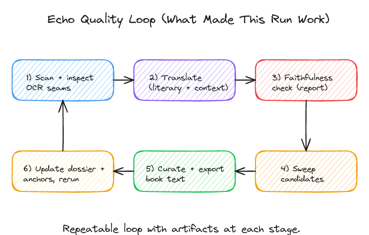

The First Echo Run I Trusted
04/03/2026
echo translation ocr llm
A look at the first Echo translation run that felt reproducible enough to keep, and the parts that still need work.
I wanted Echo to produce a run I could come back to later and still trust. Before this, it had produced promising results, but not a run that felt solid end to end.
This one did. It was a full Spanish-to-English pass with artifacts at each stage, enough context to improve chunk-level decisions, and enough saved state that the run could be resumed and inspected later.
Why this run counted
The run was not just a final output file that happened to look decent. It was a full Spanish-to-English pipeline with concrete artifacts at each stage. The committed archive records the translate window from 2026-02-22T18:18:39.571Z to 2026-02-23T00:50:48.888Z, which comes out to 6h 32m 9s across 69 chunks.
For this project, success meant three things: usable output, a resumable workflow, and enough saved state to inspect or rerun the result later.
BASH
bun run --cwd packages/echo translate -- --sourceText @.data/echo/runs/clowning-full-context/reconstructed.source.md --target en --source es --mode literary --multiRoleFlow true --revisionPass true --contextBeforeParagraphs 2 --contextAfterParagraphs 2 --holisticPass true --holisticContextCharacters 14000 --styleExamples REFERENCE_TRANSLATION_EXAMPLES_AIRA.md --styleExampleCount 5 --storySummaryPath local-inputs/clowning/story-summary.en.md --translatorDossierPath local-inputs/clowning/translator-dossier.md --faithfulnessCheck true --faithfulnessStrict false --outDir .data/echo/runs/clowning-full-context-v2 --force trueThe shape

This is a simplified version of the larger package diagram. The important part is that Echo is not translating paragraphs in isolation. Style anchors, a story summary, and a translator dossier all feed into the chunk-level decisions.
The loop

The biggest change was treating translation as a loop instead of a single model call. Scan and inspect seams, translate with context, run faithfulness checks in report mode, sweep candidates where needed, curate, then feed the results back into the dossier and style anchors.
Why this one held together
Two things made this run feel more solid. First, resumable runtime artifacts like scan.progress.jsonl, translate.progress.jsonl, and the stitch outputs meant I could see where the run was and pick it back up if needed. Second, the committed archive preserved local inputs and outputs that would otherwise be transient.
That archive matters because packages/echo/.data and packages/echo/local-inputs are normally transient or gitignored. Freezing the inputs, logs, hashes, and outputs made the run inspectable later.
What is still rough
It is not fully clean yet. There was still a manual fixup pass on 2026-03-01 for text-level cleanup in one output file, so this is not a fully automatic pipeline yet.
The runtime is also long. 6h 32m is acceptable for a milestone run, but not for regular iteration.
Next
The next step is to keep the reproducibility and saved artifacts while reducing friction. Better preflight defaults, better candidate calibration, and fewer post-run hand edits would make the tool much easier to use day to day.